En el laboratorio, aplicamos bosques aleatorios a los datos de Boston usando mtry=6 y usando ntree=25 y ntree=500. Crear un gráfico que muestre la prueba error resultante de los bosques aleatorios en este conjunto de datos para un rango de valores para mtry y ntree. Puedes modelar tu trazar después de la figura 8.10. Describa los resultados obtenidos.
library(MASS)
library(randomForest)## Warning: package 'randomForest' was built under R version 3.6.3## randomForest 4.6-14## Type rfNews() to see new features/changes/bug fixes.set.seed(19)
train <- sample(1:nrow(Boston), nrow(Boston) / 2)
Boston.train <- Boston[train, -14]
Boston.test <- Boston[-train, -14]
Y.train <- Boston[train, 14]
Y.test <- Boston[-train, 14]
rf.boston1 <- randomForest(Boston.train, y = Y.train, xtest = Boston.test, ytest = Y.test, mtry = ncol(Boston) - 1, ntree = 500)
rf.boston2 <- randomForest(Boston.train, y = Y.train, xtest = Boston.test, ytest = Y.test, mtry = (ncol(Boston) - 1) / 2, ntree = 500)
rf.boston3 <- randomForest(Boston.train, y = Y.train, xtest = Boston.test, ytest = Y.test, mtry = sqrt(ncol(Boston) - 1), ntree = 500)
plot(1:500, rf.boston1$test$mse, col = "green", type = "l", xlab = "Number of Trees", ylab = "Test MSE", ylim = c(10, 19))
lines(1:500, rf.boston2$test$mse, col = "red", type = "l")
lines(1:500, rf.boston3$test$mse, col = "blue", type = "l")
legend("topright", c("m = p", "m = p/2", "m = sqrt(p)"), col = c("green", "red", "blue"), cex = 1, lty = 1)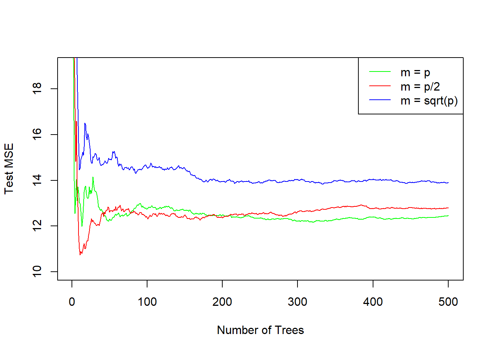
En el laboratorio, se aplicó un árbol de clasificación al conjunto de datos de Carseats después de convirtiendo a Sales en una variable de respuesta cualitativa. Ahora vamos a tratan de predecir las Sales utilizando árboles de regresión y enfoques relacionados, tratando la respuesta como una variable cuantitativa.
(a) Dividir el conjunto de datos en un conjunto de entrenamiento y un conjunto de pruebas.
library(ISLR)## Warning: package 'ISLR' was built under R version 3.6.3set.seed(19)
train <- sample(1:nrow(Carseats), nrow(Carseats) / 2)
Carseats.train <- Carseats[train, ]
Carseats.test <- Carseats[-train, ](b) Ajustar un árbol de regresión al conjunto de entrenamiento. Trazar el árbol e interpretar los resultados. ¿Qué prueba de MSE obtiene?
library(tree)## Warning: package 'tree' was built under R version 3.6.3tree.carseats <- tree(Sales ~ ., data = Carseats.train)
summary(tree.carseats)##
## Regression tree:
## tree(formula = Sales ~ ., data = Carseats.train)
## Variables actually used in tree construction:
## [1] "ShelveLoc" "Price" "CompPrice" "Age"
## Number of terminal nodes: 16
## Residual mean deviance: 2.32 = 427 / 184
## Distribution of residuals:
## Min. 1st Qu. Median Mean 3rd Qu. Max.
## -3.2480 -1.0210 -0.1413 0.0000 1.1910 3.5220plot(tree.carseats)
text(tree.carseats, pretty = 0)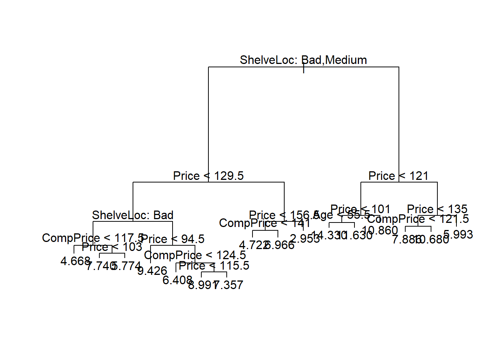
yhat <- predict(tree.carseats, newdata = Carseats.test)
mean((yhat - Carseats.test$Sales)^2)## [1] 4.770719En este caso para el árbol de regresión generado por el conjunto de entrenamiento se obtuvo un MSE de aproximadamente 4.77
(c) Utilizar la validación cruzada para determinar el nivel óptimo de la complejidad de los árboles. ¿La poda del árbol mejora la prueba de MSE?
cv.carseats <- cv.tree(tree.carseats)
plot(cv.carseats$size, cv.carseats$dev, type = "b")
tree.min <- which.min(cv.carseats$dev)
points(tree.min, cv.carseats$dev[tree.min], col = "red", cex = 2, pch = 20)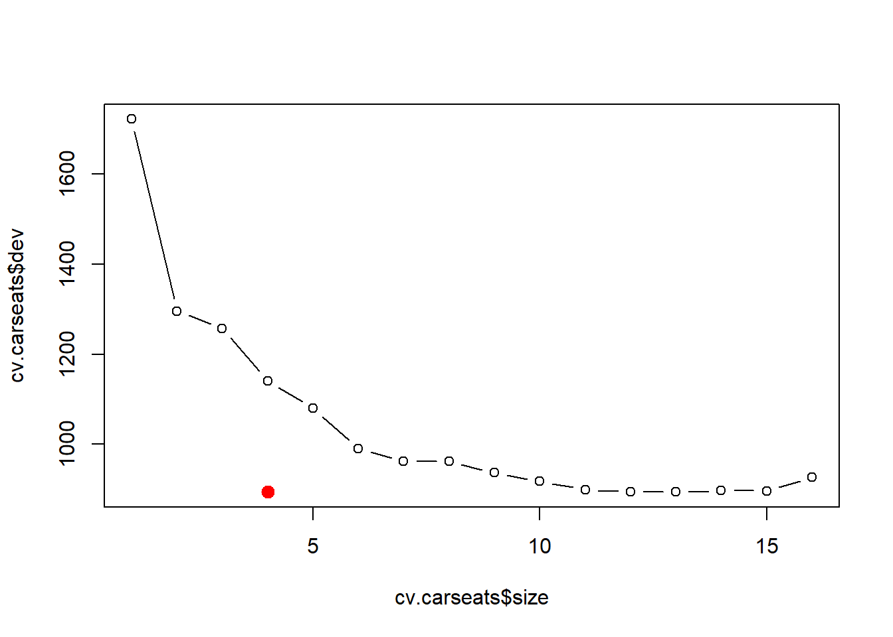
prune.carseats <- prune.tree(tree.carseats, best = 4)
plot(prune.carseats)
text(prune.carseats, pretty = 0)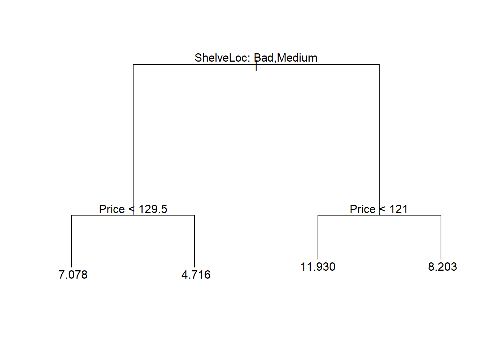
En este caso, al utilizar validación cruzada se selecciona árbol de tamaño 4. Ahora, se procede a obtener el árbol de 4 nodos.
yhat <- predict(prune.carseats, newdata = Carseats.test)
mean((yhat - Carseats.test$Sales)^2)## [1] 5.920258Luego podemos ver que reducir el árbol a 4 nodos aumenta el MSE a 5.92.
(d) Utilizar el método de embolsado para analizar estos datos. ¿Qué prueba de MSE que obtiene? Use la función importance() para determinar qué variables son más importantes.
bag.carseats <- randomForest(Sales ~ ., data = Carseats.train, mtry = 10, ntree = 500, importance = TRUE)
yhat.bag <- predict(bag.carseats, newdata = Carseats.test)
mean((yhat.bag - Carseats.test$Sales)^2)## [1] 2.749638Se obeserva que el método de embolsado arroja un MSE de aproximadamente 2.75
importance(bag.carseats)## %IncMSE IncNodePurity
## CompPrice 17.9535142 116.375844
## Income 8.1925904 84.118903
## Advertising 7.1779240 73.687301
## Population -1.2087650 48.924221
## Price 53.7332208 541.938533
## ShelveLoc 60.6365592 577.747901
## Age 8.4920020 102.669890
## Education 1.2486245 46.453329
## Urban -1.2354633 6.286653
## US -0.4600501 7.311699Ademas, se puede concluir que las variables “ShelveLoc” y “Price” son las mas importantes.
(e) Utilizar los bosques al azar para analizar estos datos. ¿Qué prueba de MSE obtener? Use la función importance() para determinar qué variables son muy importantes. Describa el efecto de m, el número de variables consideradas en cada división, en la tasa de error obtenido.
rf.carseats <- randomForest(Sales ~ ., data = Carseats.train, mtry = 3, ntree = 500, importance = TRUE)
yhat.rf <- predict(rf.carseats, newdata = Carseats.test)
mean((yhat.rf - Carseats.test$Sales)^2)## [1] 2.869527En este caso, para m=sqrt(p) se obtiene un MSE de aproximadamente 2.87
importance(rf.carseats)## %IncMSE IncNodePurity
## CompPrice 8.5310035 136.89593
## Income 4.5937746 120.97879
## Advertising 6.9623908 114.52668
## Population -1.3721859 93.95397
## Price 32.5543939 415.12381
## ShelveLoc 38.8472128 411.96746
## Age 6.5752614 142.46105
## Education 2.4014860 75.62375
## Urban -0.1499908 13.95890
## US 2.2171902 19.53415Acá tambien se puede concluir que las variables “ShelveLoc” y “Price” son las mas importantes.
Este problema involucra al conjunto de datos del “OJ”" que es parte del paquete ISLR .
(a) Crear un conjunto de entrenamiento que contenga una muestra aleatoria de 800 observaciones, y un conjunto de prueba que contenga las observaciones restantes.
set.seed(19)
train <- sample(1:nrow(OJ), 800)
OJ.train <- OJ[train, ]
OJ.test <- OJ[-train, ](b) Ajustar un árbol a los datos de entrenamiento, con la respuesta “Purchase” y las otras variables como predictores. Utilice la función summary() para producir estadísticas resumidas sobre el árbol, y describir la resultados obtenidos. ¿Cuál es la tasa de error de entrenamiento? ¿Cuántos nodos terminales que tiene el árbol?
tree.oj <- tree(Purchase ~ ., data = OJ.train)
summary(tree.oj)##
## Classification tree:
## tree(formula = Purchase ~ ., data = OJ.train)
## Variables actually used in tree construction:
## [1] "LoyalCH" "PriceDiff" "ListPriceDiff" "PctDiscMM"
## [5] "WeekofPurchase"
## Number of terminal nodes: 9
## Residual mean deviance: 0.7414 = 586.5 / 791
## Misclassification error rate: 0.1612 = 129 / 800Se puede observar que el árbol ajustado posee 9 nodos terminales y una tasa de error de entrenamiento igual a 0.1612
(c) Escriba el nombre del objeto del árbol para obtener una descripción detallada salida de texto. Escoge uno de los nodos terminales, e interpreta la información que se muestra.
tree.oj## node), split, n, deviance, yval, (yprob)
## * denotes terminal node
##
## 1) root 800 1075.00 CH ( 0.60250 0.39750 )
## 2) LoyalCH < 0.482935 307 329.60 MM ( 0.22801 0.77199 )
## 4) LoyalCH < 0.0356415 56 0.00 MM ( 0.00000 1.00000 ) *
## 5) LoyalCH > 0.0356415 251 297.10 MM ( 0.27888 0.72112 )
## 10) PriceDiff < 0.31 192 196.50 MM ( 0.20833 0.79167 ) *
## 11) PriceDiff > 0.31 59 81.77 CH ( 0.50847 0.49153 )
## 22) LoyalCH < 0.147456 7 0.00 MM ( 0.00000 1.00000 ) *
## 23) LoyalCH > 0.147456 52 70.85 CH ( 0.57692 0.42308 ) *
## 3) LoyalCH > 0.482935 493 440.50 CH ( 0.83570 0.16430 )
## 6) LoyalCH < 0.764572 229 278.60 CH ( 0.70306 0.29694 )
## 12) ListPriceDiff < 0.235 91 125.90 MM ( 0.47253 0.52747 )
## 24) PctDiscMM < 0.196197 73 100.10 CH ( 0.56164 0.43836 )
## 48) WeekofPurchase < 274.5 64 88.72 MM ( 0.50000 0.50000 ) *
## 49) WeekofPurchase > 274.5 9 0.00 CH ( 1.00000 0.00000 ) *
## 25) PctDiscMM > 0.196197 18 12.56 MM ( 0.11111 0.88889 ) *
## 13) ListPriceDiff > 0.235 138 114.20 CH ( 0.85507 0.14493 ) *
## 7) LoyalCH > 0.764572 264 103.60 CH ( 0.95076 0.04924 ) *Escogemos el nodo etiquetado como 4, que es un nodo terminal debido al asterisco. El criterio de división es LoyalCH <0.0356415, el número de observaciones en esa rama es igual a 56 con una desviación de 0 y una predicción general para la rama de MM. El 0% de las observaciones en esa rama toman el valor de CH, y el 100% restante toma el valor de MM.
(d) Crear un gráfico del árbol e interpretar los resultados.
plot(tree.oj)
text(tree.oj, pretty = 0)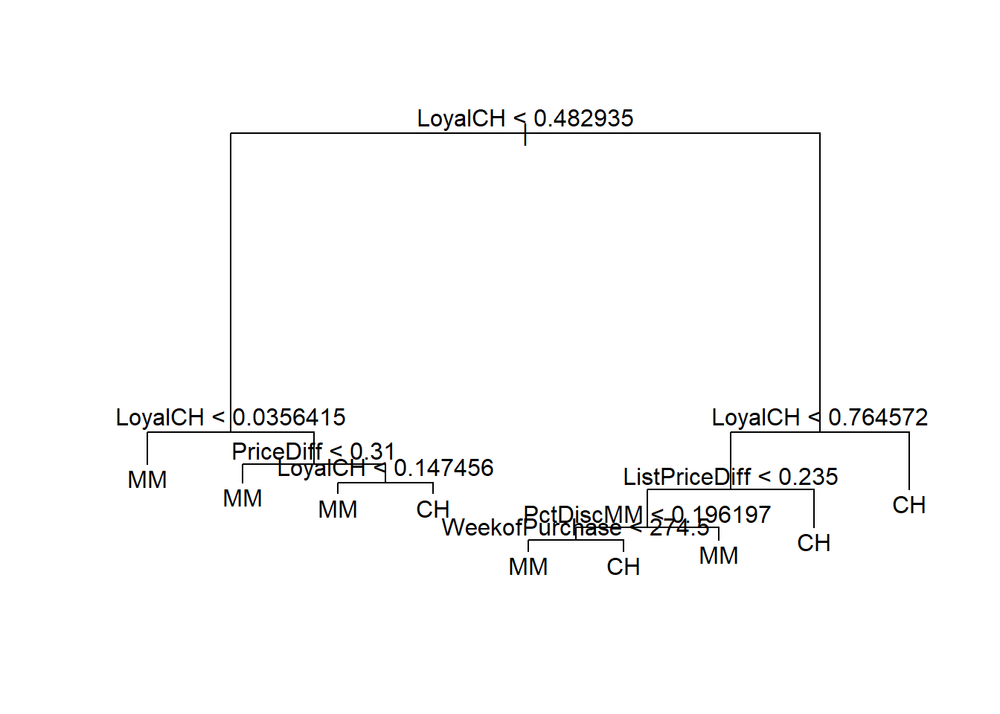
Podemos ver que el indicador más importante de “Purchase” parece ser “Loyalch”, de hecho, los nodos superiores contienen “Loyalch”.
(e) Predecir la respuesta en los datos de la prueba, y producir una matriz de confusión que compara las etiquetas de las pruebas con las etiquetas de las pruebas previstas. ¿Cuál es la tasa de error de la prueba?
tree.pred <- predict(tree.oj, OJ.test, type = "class")
table(tree.pred, OJ.test$Purchase)##
## tree.pred CH MM
## CH 139 23
## MM 32 761 - (147 + 62) / 270## [1] 0.2259259Podemos concluir que la tasa de error de la prueba es de aproximadamente 23%.
(f) Aplicar la función cv.tree() al conjunto de entrenamiento para determinar el tamaño óptimo del árbol.
cv.oj <- cv.tree(tree.oj, FUN = prune.misclass)
cv.oj## $size
## [1] 9 8 5 2 1
##
## $dev
## [1] 170 170 167 171 318
##
## $k
## [1] -Inf 0.000000 2.666667 4.666667 167.000000
##
## $method
## [1] "misclass"
##
## attr(,"class")
## [1] "prune" "tree.sequence"(g) Elaborar un gráfico con el tamaño del árbol en el eje x y la tasa de error de clasificación en la validación cruzada en el eje Y.
plot(cv.oj$size, cv.oj$dev, type = "b", xlab = "Tree size", ylab = "Deviance")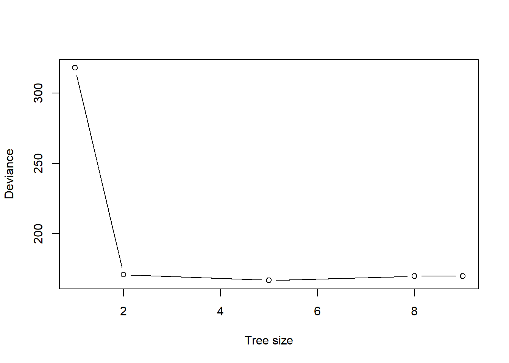
(h) ¿Qué tamaño de árbol corresponde a la tasa de error de clasificación en la validación cruzada mas baja?
Podemos ver que el árbol de 5 nodos es el árbol más pequeño con la tasa de error de clasificación más baja.
(i) Producir un árbol podado que corresponda al tamaño óptimo del árbol obtenido mediante validación cruzada. Si la validación cruzada no conduce a la selección de un árbol podado, luego crear un árbol podado con cinco nodos terminales.
prune.oj <- prune.misclass(tree.oj, best = 5)
plot(prune.oj)
text(prune.oj, pretty = 0)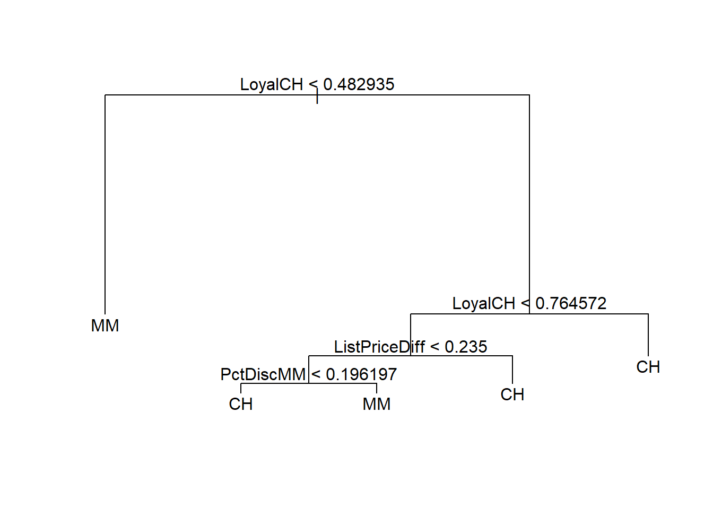
(j) Comparar las tasas de error de entrenamiento entre los podados y los no podados árboles. ¿Cuál es más alto?
summary(tree.oj)##
## Classification tree:
## tree(formula = Purchase ~ ., data = OJ.train)
## Variables actually used in tree construction:
## [1] "LoyalCH" "PriceDiff" "ListPriceDiff" "PctDiscMM"
## [5] "WeekofPurchase"
## Number of terminal nodes: 9
## Residual mean deviance: 0.7414 = 586.5 / 791
## Misclassification error rate: 0.1612 = 129 / 800summary(prune.oj)##
## Classification tree:
## snip.tree(tree = tree.oj, nodes = c(24L, 2L))
## Variables actually used in tree construction:
## [1] "LoyalCH" "ListPriceDiff" "PctDiscMM"
## Number of terminal nodes: 5
## Residual mean deviance: 0.8303 = 660.1 / 795
## Misclassification error rate: 0.1713 = 137 / 800La tasa de error de clasificación errónea es ligeramente mayor para el árbol podado (0.1713 frente a 0.1612).
(k) Comparar los índices de error de la prueba entre los podados y los no podados árboles. ¿Cuál es más alto?
prune.pred <- predict(prune.oj, OJ.test, type = "class")
table(prune.pred, OJ.test$Purchase)##
## prune.pred CH MM
## CH 146 23
## MM 25 761 - (119 + 81) / 270## [1] 0.2592593Se concluye que pare este caso, el proceso de poda del árbol aumenta la tasa de error de prueba a aproximadamente 26%, pero arroja un árbol mucho más facil de interpretar.
Ahora usamos el aumento para predecir el Salary en el conjunto de datos de los Hitters.
(a) Eliminar las observaciones para las que la información de salarios es desconocida, y luego log-transformar los salarios.
Hitters <- na.omit(Hitters)
Hitters$Salary <- log(Hitters$Salary)(b) Crear un conjunto de entrenamiento que consista en las primeras 200 observaciones, y un conjunto de pruebas que consiste en las observaciones restantes.
train <- 1:200
Hitters.train <- Hitters[train, ]
Hitters.test <- Hitters[-train, ](c) Realizar la potenciación del conjunto de entrenamiento con 1.000 árboles para un rango de valores del parámetro de contracción λ. Producir un gráfico con diferentes valores de contracción en el eje x y los correspondientes El entrenamiento fijó el MSE en el eje Y.
library(gbm)## Warning: package 'gbm' was built under R version 3.6.3## Loaded gbm 2.1.5set.seed(19)
pows <- seq(-10, -0.2, by = 0.1)
lambdas <- 10^pows
train.err <- rep(NA, length(lambdas))
for (i in 1:length(lambdas)) {
boost.hitters <- gbm(Salary ~ ., data = Hitters.train, distribution = "gaussian", n.trees = 1000, shrinkage = lambdas[i])
pred.train <- predict(boost.hitters, Hitters.train, n.trees = 1000)
train.err[i] <- mean((pred.train - Hitters.train$Salary)^2)
}
plot(lambdas, train.err, type = "b", xlab = "Shrinkage values", ylab = "Training MSE")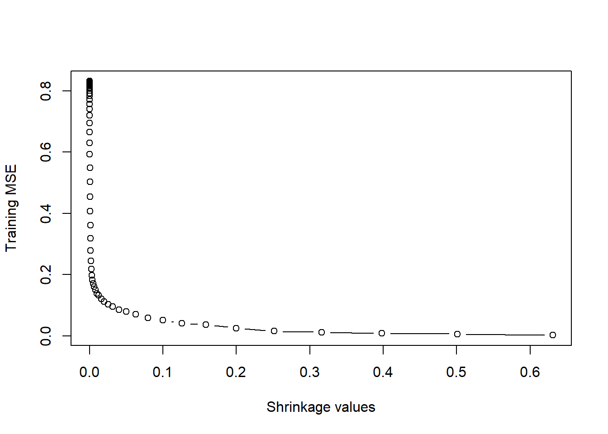
(d) Producir un gráfico con diferentes valores de contracción en el eje x y el correspondiente conjunto de pruebas MSE en el eje y.
set.seed(19)
test.err <- rep(NA, length(lambdas))
for (i in 1:length(lambdas)) {
boost.hitters <- gbm(Salary ~ ., data = Hitters.train, distribution = "gaussian", n.trees = 1000, shrinkage = lambdas[i])
yhat <- predict(boost.hitters, Hitters.test, n.trees = 1000)
test.err[i] <- mean((yhat - Hitters.test$Salary)^2)
}
plot(lambdas, test.err, type = "b", xlab = "Shrinkage values", ylab = "Test MSE")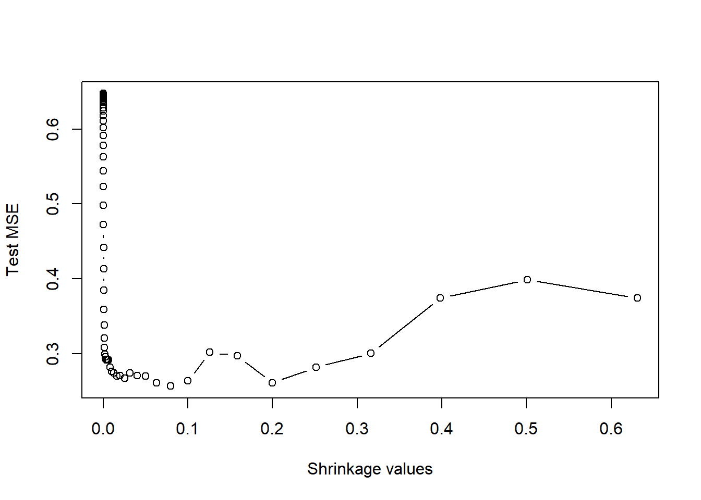
min(test.err)## [1] 0.256522lambdas[which.min(test.err)]## [1] 0.07943282De esta manera el minimo MSE es aproximadamente 0.26 y se obtiene para un lambda=0.079
(e) Comparar la prueba MSE de potenciación con la prueba MSE que resulta de aplicar dos de los enfoques de regresión que se ven en Capítulos 3 y 6.
library(glmnet)## Warning: package 'glmnet' was built under R version 3.6.3## Loading required package: Matrix## Loaded glmnet 3.0-2fit1 <- lm(Salary ~ ., data = Hitters.train)
pred1 <- predict(fit1, Hitters.test)
mean((pred1 - Hitters.test$Salary)^2)## [1] 0.4917959x <- model.matrix(Salary ~ ., data = Hitters.train)
x.test <- model.matrix(Salary ~ ., data = Hitters.test)
y <- Hitters.train$Salary
fit2 <- glmnet(x, y, alpha = 0)
pred2 <- predict(fit2, s = 0.01, newx = x.test)
mean((pred2 - Hitters.test$Salary)^2)## [1] 0.4570283Entonces la prueba MSE de potenciación es menor que para regresión lineal y regresión de cresta.
(f) Cuáles son las variables que parecen ser los predictores más importantes en el modelo de la promoción?
library(gbm)boost.hitters <- gbm(Salary ~ ., data = Hitters.train, distribution = "gaussian", n.trees = 1000, shrinkage = lambdas[which.min(test.err)])
summary(boost.hitters)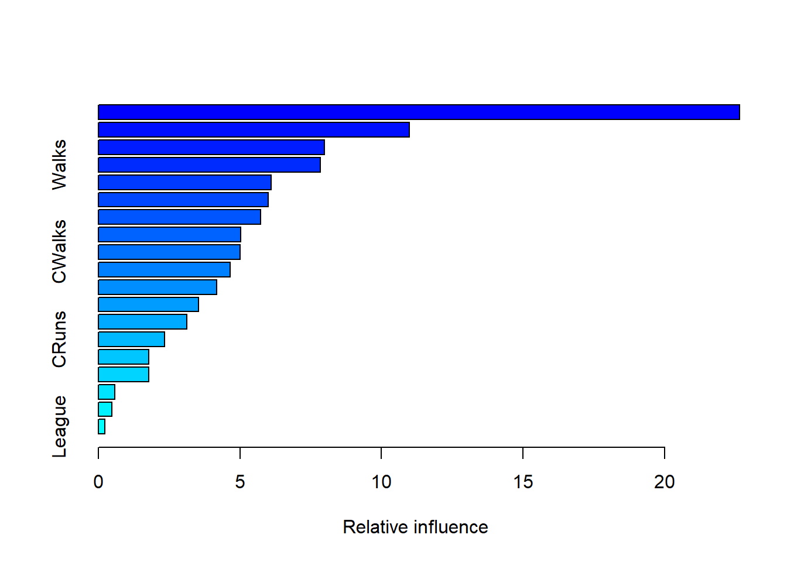
## var rel.inf
## CAtBat CAtBat 22.6464551
## CRBI CRBI 10.9778437
## PutOuts PutOuts 7.9754321
## Walks Walks 7.8359526
## CHits CHits 6.1055137
## Hits Hits 6.0083357
## Years Years 5.7345888
## CHmRun CHmRun 5.0230875
## CWalks CWalks 5.0102909
## Assists Assists 4.6455349
## AtBat AtBat 4.1750857
## HmRun HmRun 3.5467763
## RBI RBI 3.1194651
## CRuns CRuns 2.3418632
## Errors Errors 1.7908867
## Runs Runs 1.7759138
## Division Division 0.5895435
## NewLeague NewLeague 0.4710349
## League League 0.2263958Finalmente, se observa que la variable “CAtBat” parece ser el predictor mas importante en el modelo de la promoción.
(g) Ahora aplique el embolsado al equipo de entrenamiento. ¿Qué es el equipo de prueba MSE para este enfoque?
set.seed(19)
bag.hitters <- randomForest(Salary ~ ., data = Hitters.train, mtry = 19, ntree = 500)
yhat.bag <- predict(bag.hitters, newdata = Hitters.test)
mean((yhat.bag - Hitters.test$Salary)^2)## [1] 0.2296688Así, el MSE para el embolsado al equipo de entrenamiento es 0.23, ligeramente más bajo que el MSE de la prueba de potenciación.
Esta pregunta utiliza el conjunto de datos de Caravan.
(a) Cree un conjunto de entrenamiento que consta de las primeras 1,000 observaciones, y un conjunto de prueba que consta de las observaciones restantes.
set.seed(19)
train <- 1:1000
Caravan$Purchase <- ifelse(Caravan$Purchase == "Yes", 1, 0)
Caravan.train <- Caravan[train, ]
Caravan.test <- Caravan[-train, ](b) Ajustar un modelo de potenciación al conjunto de entrenamiento con “Purchase” como variable respuesta y las otras variables como predictores. Utiliza 1.000 árboles, y un valor de contracción de 0,01. ¿Cual de los predictores parece ser el más importante?
set.seed(19)
boost.caravan <- gbm(Purchase ~ ., data = Caravan.train, distribution = "gaussian", n.trees = 1000, shrinkage = 0.01)## Warning in gbm.fit(x = x, y = y, offset = offset, distribution =
## distribution, : variable 50: PVRAAUT has no variation.## Warning in gbm.fit(x = x, y = y, offset = offset, distribution =
## distribution, : variable 71: AVRAAUT has no variation.summary(boost.caravan)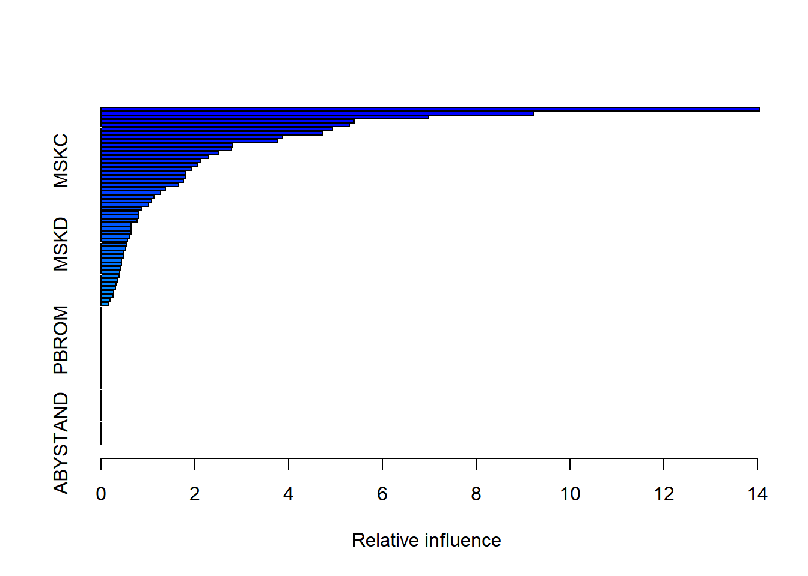
## var rel.inf
## PPERSAUT PPERSAUT 14.0373475
## MKOOPKLA MKOOPKLA 9.2339247
## MOPLHOOG MOPLHOOG 6.9853678
## MBERMIDD MBERMIDD 5.4017973
## PBRAND PBRAND 5.3122033
## MGODGE MGODGE 4.9332847
## ABRAND ABRAND 4.7363042
## MINK3045 MINK3045 3.8754137
## MOSTYPE MOSTYPE 3.7629162
## MAUT1 MAUT1 2.8127304
## PWAPART PWAPART 2.7894790
## MAUT2 MAUT2 2.5100087
## MGODPR MGODPR 2.2915169
## MSKC MSKC 2.1303111
## MBERARBG MBERARBG 2.0547724
## MINKGEM MINKGEM 1.9405615
## MSKB1 MSKB1 1.7985779
## MSKA MSKA 1.7963125
## PBYSTAND PBYSTAND 1.7549661
## MFWEKIND MFWEKIND 1.6605921
## MGODOV MGODOV 1.3738235
## MRELOV MRELOV 1.2724410
## MFGEKIND MFGEKIND 1.1254217
## MHKOOP MHKOOP 1.0777335
## MBERHOOG MBERHOOG 1.0134876
## MZFONDS MZFONDS 0.8696404
## MRELGE MRELGE 0.8144746
## MINKM30 MINKM30 0.7963491
## MINK7512 MINK7512 0.7662992
## MOPLMIDD MOPLMIDD 0.6483454
## MGODRK MGODRK 0.6474206
## MBERARBO MBERARBO 0.6383682
## MINK4575 MINK4575 0.6170132
## MGEMLEEF MGEMLEEF 0.5591457
## MSKD MSKD 0.5344524
## MBERBOER MBERBOER 0.5236652
## MZPART MZPART 0.4786901
## MAUT0 MAUT0 0.4753670
## MOPLLAAG MOPLLAAG 0.4432628
## MOSHOOFD MOSHOOFD 0.4348231
## APERSAUT APERSAUT 0.4147609
## MINK123M MINK123M 0.4051593
## PMOTSCO PMOTSCO 0.3905328
## MHHUUR MHHUUR 0.3506464
## PLEVEN PLEVEN 0.3198684
## MFALLEEN MFALLEEN 0.3129696
## MRELSA MRELSA 0.2733983
## MGEMOMV MGEMOMV 0.2607110
## MSKB2 MSKB2 0.1942997
## MBERZELF MBERZELF 0.1490412
## MAANTHUI MAANTHUI 0.0000000
## PWABEDR PWABEDR 0.0000000
## PWALAND PWALAND 0.0000000
## PBESAUT PBESAUT 0.0000000
## PVRAAUT PVRAAUT 0.0000000
## PAANHANG PAANHANG 0.0000000
## PTRACTOR PTRACTOR 0.0000000
## PWERKT PWERKT 0.0000000
## PBROM PBROM 0.0000000
## PPERSONG PPERSONG 0.0000000
## PGEZONG PGEZONG 0.0000000
## PWAOREG PWAOREG 0.0000000
## PZEILPL PZEILPL 0.0000000
## PPLEZIER PPLEZIER 0.0000000
## PFIETS PFIETS 0.0000000
## PINBOED PINBOED 0.0000000
## AWAPART AWAPART 0.0000000
## AWABEDR AWABEDR 0.0000000
## AWALAND AWALAND 0.0000000
## ABESAUT ABESAUT 0.0000000
## AMOTSCO AMOTSCO 0.0000000
## AVRAAUT AVRAAUT 0.0000000
## AAANHANG AAANHANG 0.0000000
## ATRACTOR ATRACTOR 0.0000000
## AWERKT AWERKT 0.0000000
## ABROM ABROM 0.0000000
## ALEVEN ALEVEN 0.0000000
## APERSONG APERSONG 0.0000000
## AGEZONG AGEZONG 0.0000000
## AWAOREG AWAOREG 0.0000000
## AZEILPL AZEILPL 0.0000000
## APLEZIER APLEZIER 0.0000000
## AFIETS AFIETS 0.0000000
## AINBOED AINBOED 0.0000000
## ABYSTAND ABYSTAND 0.0000000Despúes de ajustar un modelo de potenciación al conjunto de entrenamiento con “Purchase” como variable respuesta, se obtuvo que la variable predictora más importante es “PPERSAUT”.
(c) Utilizar el modelo de potenciación para predecir la respuesta en los datos de la prueba. Predecir que una persona hará una compra si la probabilidad estimada de compra es superior al 20%. Formar una matriz de confusión. ¿Qué fracción de la gente predijo que haría una compra ¿hacen uno de hecho? ¿Cómo se compara esto con los resultados obtenidos al aplicar KNN o regresión logística a estos datos ¿Juego?
probs.test <- predict(boost.caravan, Caravan.test, n.trees = 1000, type = "response")
pred.test <- ifelse(probs.test > 0.2, 1, 0)
table(Caravan.test$Purchase, pred.test)## pred.test
## 0 1
## 0 4497 36
## 1 278 11Utilizando el modelo de potenciación se obtiene que si la probabilidad de que una persona realice una compra es superior al 20% la fracción de personas es aproximadamente 0.21
logit.caravan <- glm(Purchase ~ ., data = Caravan.train, family = "binomial")## Warning: glm.fit: fitted probabilities numerically 0 or 1 occurredprobs.test2 <- predict(logit.caravan, Caravan.test, type = "response")## Warning in predict.lm(object, newdata, se.fit, scale = 1, type = if (type
## == : prediction from a rank-deficient fit may be misleadingpred.test2 <- ifelse(probs.test > 0.2, 1, 0)
table(Caravan.test$Purchase, pred.test2)## pred.test2
## 0 1
## 0 4497 36
## 1 278 11Luego, aplicanco regresión logística se obtiene nuevamente una fracción de personas aproximadamente de 0.21.
Aplicar el aumento, el embolsamiento y los bosques aleatorios a un conjunto de datos de su elección. Asegúrate de que los modelos encajen en un conjunto de entrenamiento y de que evalúen su rendimiento en un equipo de prueba. ¿Cómo de precisos son los resultados comparados a métodos simples como la regresión lineal o logística? ¿Cuál de estos que los enfoques de la investigación dan el mejor resultado?
Primero, utilizando el conjunto de datos “Weekly” del paquete “ISLR” para predecir la variable “Direction”.
library(gbm)
set.seed(19)
train <- sample(nrow(Weekly), nrow(Weekly) / 2)
Weekly$Direction <- ifelse(Weekly$Direction == "Up", 1, 0)
Weekly.train <- Weekly[train, ]
Weekly.test <- Weekly[-train, ]Aplicando regresión logística:
logit.fit <- glm(Direction ~ . - Year - Today, data = Weekly.train, family = "binomial")
logit.probs <- predict(logit.fit, newdata = Weekly.test, type = "response")
logit.pred <- ifelse(logit.probs > 0.5, 1, 0)
table(Weekly.test$Direction, logit.pred)## logit.pred
## 0 1
## 0 46 188
## 1 69 242boost.fit <- gbm(Direction ~ . - Year - Today, data = Weekly.train, distribution = "bernoulli", n.trees = 5000)
boost.probs <- predict(boost.fit, newdata = Weekly.test, n.trees = 5000)
boost.pred <- ifelse(boost.probs > 0.5, 1, 0)
table(Weekly.test$Direction, boost.pred)## boost.pred
## 0 1
## 0 132 102
## 1 159 152bag.fit <- randomForest(Direction ~ . - Year - Today, data = Weekly.train, mtry = 6)## Warning in randomForest.default(m, y, ...): The response has five or fewer
## unique values. Are you sure you want to do regression?bag.probs <- predict(bag.fit, newdata = Weekly.test)
bag.pred <- ifelse(bag.probs > 0.5, 1, 0)
table(Weekly.test$Direction, bag.pred)## bag.pred
## 0 1
## 0 100 134
## 1 118 193rf.fit <- randomForest(Direction ~ . - Year - Today, data = Weekly.train, mtry = 2)## Warning in randomForest.default(m, y, ...): The response has five or fewer
## unique values. Are you sure you want to do regression?rf.probs <- predict(rf.fit, newdata = Weekly.test)
rf.pred <- ifelse(rf.probs > 0.5, 1, 0)
table(Weekly.test$Direction, rf.pred)## rf.pred
## 0 1
## 0 99 135
## 1 118 193